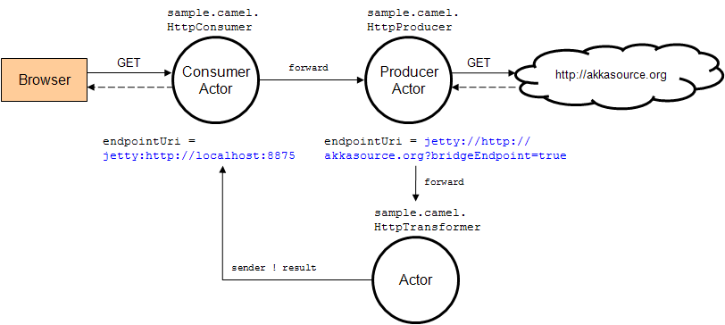
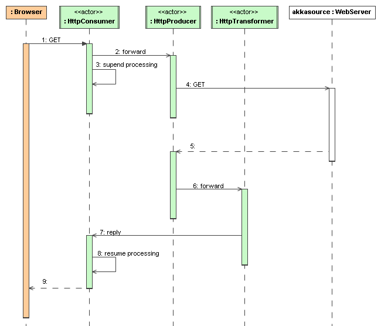
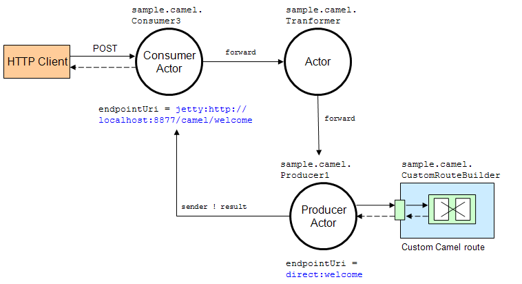

Camel
Introduction
The akka-camel module allows Untyped Actors to receive and send messages over a great variety of protocols and APIs. In addition to the native Scala and Java actor API, actors can now exchange messages with other systems over large number of protocols and APIs such as HTTP, SOAP, TCP, FTP, SMTP or JMS, to mention a few. At the moment, approximately 80 protocols and APIs are supported.
Apache Camel
The akka-camel module is based on Apache Camel, a powerful and light-weight integration framework for the JVM. For an introduction to Apache Camel you may want to read this Apache Camel article. Camel comes with a large number of components that provide bindings to different protocols and APIs. The camel-extra project provides further components.
Consumer
Usage of Camel's integration components in Akka is essentially a one-liner. Here's an example.
import akka.camel.{ CamelMessage, Consumer }
class MyEndpoint extends Consumer {
def endpointUri = "mina2:tcp://localhost:6200?textline=true"
def receive = {
case msg: CamelMessage ⇒ { /* ... */ }
case _ ⇒ { /* ... */ }
}
}
// start and expose actor via tcp
import akka.actor.{ ActorSystem, Props }
val system = ActorSystem("some-system")
val mina = system.actorOf(Props[MyEndpoint])
The above example exposes an actor over a TCP endpoint via Apache Camel's Mina component. The actor implements the endpointUri method to define an endpoint from which it can receive messages. After starting the actor, TCP clients can immediately send messages to and receive responses from that actor. If the message exchange should go over HTTP (via Camel's Jetty component), only the actor's endpointUri method must be changed.
import akka.camel.{ CamelMessage, Consumer }
class MyEndpoint extends Consumer {
def endpointUri = "jetty:http://localhost:8877/example"
def receive = {
case msg: CamelMessage ⇒ { /* ... */ }
case _ ⇒ { /* ... */ }
}
}
Producer
Actors can also trigger message exchanges with external systems i.e. produce to Camel endpoints.
import akka.actor.Actor
import akka.camel.{ Producer, Oneway }
import akka.actor.{ ActorSystem, Props }
class Orders extends Actor with Producer with Oneway {
def endpointUri = "jms:queue:Orders"
}
val sys = ActorSystem("some-system")
val orders = sys.actorOf(Props[Orders])
orders ! <order amount="100" currency="PLN" itemId="12345"/>
In the above example, any message sent to this actor will be sent to the JMS queue orders. Producer actors may choose from the same set of Camel components as Consumer actors do.
CamelMessage
The number of Camel components is constantly increasing. The akka-camel module can support these in a plug-and-play manner. Just add them to your application's classpath, define a component-specific endpoint URI and use it to exchange messages over the component-specific protocols or APIs. This is possible because Camel components bind protocol-specific message formats to a Camel-specific normalized message format. The normalized message format hides protocol-specific details from Akka and makes it therefore very easy to support a large number of protocols through a uniform Camel component interface. The akka-camel module further converts mutable Camel messages into immutable representations which are used by Consumer and Producer actors for pattern matching, transformation, serialization or storage. In the above example of the Orders Producer, the XML message is put in the body of a newly created Camel Message with an empty set of headers. You can also create a CamelMessage yourself with the appropriate body and headers as you see fit.
CamelExtension
The akka-camel module is implemented as an Akka Extension, the CamelExtension object. Extensions will only be loaded once per ActorSystem, which will be managed by Akka. The CamelExtension object provides access to the Camel trait. The Camel trait in turn provides access to two important Apache Camel objects, the CamelContext and the ProducerTemplate. Below you can see how you can get access to these Apache Camel objects.
val system = ActorSystem("some-system")
val camel = CamelExtension(system)
val camelContext = camel.context
val producerTemplate = camel.template
One CamelExtension is only loaded once for every one ActorSystem, which makes it safe to call the CamelExtension at any point in your code to get to the Apache Camel objects associated with it. There is one CamelContext and one ProducerTemplate for every one ActorSystem that uses a CamelExtension. Below an example on how to add the ActiveMQ component to the CamelContext, which is required when you would like to use the ActiveMQ component.
// import org.apache.activemq.camel.component.ActiveMQComponent
val system = ActorSystem("some-system")
val camel = CamelExtension(system)
val camelContext = camel.context
// camelContext.addComponent("activemq", ActiveMQComponent.activeMQComponent(
// "vm://localhost?broker.persistent=false"))
The CamelContext joins the lifecycle of the ActorSystem and CamelExtension it is associated with; the CamelContext is started when the CamelExtension is created, and it is shut down when the associated ActorSystem is shut down. The same is true for the ProducerTemplate.
The CamelExtension is used by both Producer and Consumer actors to interact with Apache Camel internally. You can access the CamelExtension inside a Producer or a Consumer using the camel definition, or get straight at the CamelContext using the camelContext definition. Actors are created and started asynchronously. When a Consumer actor is created, the Consumer is published at its Camel endpoint (more precisely, the route is added to the CamelContext from the Endpoint to the actor). When a Producer actor is created, a SendProcessor and Endpoint are created so that the Producer can send messages to it. Publication is done asynchronously; setting up an endpoint may still be in progress after you have requested the actor to be created. Some Camel components can take a while to startup, and in some cases you might want to know when the endpoints are activated and ready to be used. The Camel trait allows you to find out when the endpoint is activated or deactivated.
import akka.camel.{ CamelMessage, Consumer }
import scala.concurrent.duration._
class MyEndpoint extends Consumer {
def endpointUri = "mina2:tcp://localhost:6200?textline=true"
def receive = {
case msg: CamelMessage ⇒ { /* ... */ }
case _ ⇒ { /* ... */ }
}
}
val system = ActorSystem("some-system")
val camel = CamelExtension(system)
val actorRef = system.actorOf(Props[MyEndpoint])
// get a future reference to the activation of the endpoint of the Consumer Actor
val activationFuture = camel.activationFutureFor(actorRef)(timeout = 10 seconds,
executor = system.dispatcher)
The above code shows that you can get a Future to the activation of the route from the endpoint to the actor, or you can wait in a blocking fashion on the activation of the route. An ActivationTimeoutException is thrown if the endpoint could not be activated within the specified timeout. Deactivation works in a similar fashion:
system.stop(actorRef)
// get a future reference to the deactivation of the endpoint of the Consumer Actor
val deactivationFuture = camel.deactivationFutureFor(actorRef)(timeout = 10 seconds,
executor = system.dispatcher)
Deactivation of a Consumer or a Producer actor happens when the actor is terminated. For a Consumer, the route to the actor is stopped. For a Producer, the SendProcessor is stopped. A DeActivationTimeoutException is thrown if the associated camel objects could not be deactivated within the specified timeout.
Consumer Actors
For objects to receive messages, they must mixin the Consumer trait. For example, the following actor class (Consumer1) implements the endpointUri method, which is declared in the Consumer trait, in order to receive messages from the file:data/input/actor Camel endpoint.
import akka.camel.{ CamelMessage, Consumer }
class Consumer1 extends Consumer {
def endpointUri = "file:data/input/actor"
def receive = {
case msg: CamelMessage ⇒ println("received %s" format msg.bodyAs[String])
}
}
Whenever a file is put into the data/input/actor directory, its content is picked up by the Camel file component and sent as message to the actor. Messages consumed by actors from Camel endpoints are of type CamelMessage. These are immutable representations of Camel messages.
Here's another example that sets the endpointUri to jetty:http://localhost:8877/camel/default. It causes Camel's Jetty component to start an embedded Jetty server, accepting HTTP connections from localhost on port 8877.
import akka.camel.{ CamelMessage, Consumer }
class Consumer2 extends Consumer {
def endpointUri = "jetty:http://localhost:8877/camel/default"
def receive = {
case msg: CamelMessage ⇒ sender ! ("Hello %s" format msg.bodyAs[String])
}
}
After starting the actor, clients can send messages to that actor by POSTing to http://localhost:8877/camel/default. The actor sends a response by using the sender ! method. For returning a message body and headers to the HTTP client the response type should be CamelMessage. For any other response type, a new CamelMessage object is created by akka-camel with the actor response as message body.
Delivery acknowledgements
With in-out message exchanges, clients usually know that a message exchange is done when they receive a reply from a consumer actor. The reply message can be a CamelMessage (or any object which is then internally converted to a CamelMessage) on success, and a Failure message on failure.
With in-only message exchanges, by default, an exchange is done when a message is added to the consumer actor's mailbox. Any failure or exception that occurs during processing of that message by the consumer actor cannot be reported back to the endpoint in this case. To allow consumer actors to positively or negatively acknowledge the receipt of a message from an in-only message exchange, they need to override the autoAck method to return false. In this case, consumer actors must reply either with a special akka.camel.Ack message (positive acknowledgement) or a akka.actor.Status.Failure (negative acknowledgement).
import akka.camel.{ CamelMessage, Consumer }
import akka.camel.Ack
import akka.actor.Status.Failure
class Consumer3 extends Consumer {
override def autoAck = false
def endpointUri = "jms:queue:test"
def receive = {
case msg: CamelMessage ⇒
sender ! Ack
// on success
// ..
val someException = new Exception("e1")
// on failure
sender ! Failure(someException)
}
}
Consumer timeout
Camel Exchanges (and their corresponding endpoints) that support two-way communications need to wait for a response from an actor before returning it to the initiating client. For some endpoint types, timeout values can be defined in an endpoint-specific way which is described in the documentation of the individual Camel components. Another option is to configure timeouts on the level of consumer actors.
Two-way communications between a Camel endpoint and an actor are initiated by sending the request message to the actor with the ask pattern and the actor replies to the endpoint when the response is ready. The ask request to the actor can timeout, which will result in the Exchange failing with a TimeoutException set on the failure of the Exchange. The timeout on the consumer actor can be overridden with the replyTimeout, as shown below.
import akka.camel.{ CamelMessage, Consumer }
import scala.concurrent.duration._
class Consumer4 extends Consumer {
def endpointUri = "jetty:http://localhost:8877/camel/default"
override def replyTimeout = 500 millis
def receive = {
case msg: CamelMessage ⇒ sender ! ("Hello %s" format msg.bodyAs[String])
}
}
Producer Actors
For sending messages to Camel endpoints, actors need to mixin the Producer trait and implement the endpointUri method.
import akka.actor.Actor
import akka.actor.{ Props, ActorSystem }
import akka.camel.{ Producer, CamelMessage }
import akka.util.Timeout
class Producer1 extends Actor with Producer {
def endpointUri = "http://localhost:8080/news"
}
Producer1 inherits a default implementation of the receive method from the Producer trait. To customize a producer actor's default behavior you must override the Producer.transformResponse and Producer.transformOutgoingMessage methods. This is explained later in more detail. Producer Actors cannot override the default Producer.receive method.
Any message sent to a Producer actor will be sent to the associated Camel endpoint, in the above example to http://localhost:8080/news. The Producer always sends messages asynchronously. Response messages (if supported by the configured endpoint) will, by default, be returned to the original sender. The following example uses the ask pattern to send a message to a Producer actor and waits for a response.
import akka.pattern.ask
import scala.concurrent.duration._
implicit val timeout = Timeout(10 seconds)
val system = ActorSystem("some-system")
val producer = system.actorOf(Props[Producer1])
val future = producer.ask("some request").mapTo[CamelMessage]
The future contains the response CamelMessage, or an AkkaCamelException when an error occurred, which contains the headers of the response.
Custom Processing
Instead of replying to the initial sender, producer actors can implement custom response processing by overriding the routeResponse method. In the following example, the response message is forwarded to a target actor instead of being replied to the original sender.
import akka.actor.{ Actor, ActorRef }
import akka.camel.{ Producer, CamelMessage }
import akka.actor.{ Props, ActorSystem }
class ResponseReceiver extends Actor {
def receive = {
case msg: CamelMessage ⇒
// do something with the forwarded response
}
}
class Forwarder(uri: String, target: ActorRef) extends Actor with Producer {
def endpointUri = uri
override def routeResponse(msg: Any) { target forward msg }
}
val system = ActorSystem("some-system")
val receiver = system.actorOf(Props[ResponseReceiver])
val forwardResponse = system.actorOf(
Props(classOf[Forwarder], this, "http://localhost:8080/news/akka", receiver))
// the Forwarder sends out a request to the web page and forwards the response to
// the ResponseReceiver
forwardResponse ! "some request"
Before producing messages to endpoints, producer actors can pre-process them by overriding the Producer.transformOutgoingMessage method.
import akka.actor.Actor
import akka.camel.{ Producer, CamelMessage }
class Transformer(uri: String) extends Actor with Producer {
def endpointUri = uri
def upperCase(msg: CamelMessage) = msg.mapBody {
body: String ⇒ body.toUpperCase
}
override def transformOutgoingMessage(msg: Any) = msg match {
case msg: CamelMessage ⇒ upperCase(msg)
}
}
Producer configuration options
The interaction of producer actors with Camel endpoints can be configured to be one-way or two-way (by initiating in-only or in-out message exchanges, respectively). By default, the producer initiates an in-out message exchange with the endpoint. For initiating an in-only exchange, producer actors have to override the oneway method to return true.
import akka.actor.{ Actor, Props, ActorSystem }
import akka.camel.Producer
class OnewaySender(uri: String) extends Actor with Producer {
def endpointUri = uri
override def oneway: Boolean = true
}
val system = ActorSystem("some-system")
val producer = system.actorOf(Props(classOf[OnewaySender], this, "activemq:FOO.BAR"))
producer ! "Some message"
Message correlation
To correlate request with response messages, applications can set the Message.MessageExchangeId message header.
import akka.camel.{ Producer, CamelMessage }
import akka.actor.Actor
import akka.actor.{ Props, ActorSystem }
class Producer2 extends Actor with Producer {
def endpointUri = "activemq:FOO.BAR"
}
val system = ActorSystem("some-system")
val producer = system.actorOf(Props[Producer2])
producer ! CamelMessage("bar", Map(CamelMessage.MessageExchangeId -> "123"))
ProducerTemplate
The Producer trait is a very convenient way for actors to produce messages to Camel endpoints. Actors may also use a Camel ProducerTemplate for producing messages to endpoints.
import akka.actor.Actor
class MyActor extends Actor {
def receive = {
case msg ⇒
val template = CamelExtension(context.system).template
template.sendBody("direct:news", msg)
}
}
For initiating a a two-way message exchange, one of the ProducerTemplate.request* methods must be used.
import akka.actor.Actor
class MyActor extends Actor {
def receive = {
case msg ⇒
val template = CamelExtension(context.system).template
sender ! template.requestBody("direct:news", msg)
}
}
Asynchronous routing
In-out message exchanges between endpoints and actors are designed to be asynchronous. This is the case for both, consumer and producer actors.
- A consumer endpoint sends request messages to its consumer actor using the ! (tell) operator and the actor returns responses with sender ! once they are ready.
- A producer actor sends request messages to its endpoint using Camel's asynchronous routing engine. Asynchronous responses are wrapped and added to the producer actor's mailbox for later processing. By default, response messages are returned to the initial sender but this can be overridden by Producer implementations (see also description of the routeResponse method in Custom Processing).
However, asynchronous two-way message exchanges, without allocating a thread for the full duration of exchange, cannot be generically supported by Camel's asynchronous routing engine alone. This must be supported by the individual Camel components (from which endpoints are created) as well. They must be able to suspend any work started for request processing (thereby freeing threads to do other work) and resume processing when the response is ready. This is currently the case for a subset of components such as the Jetty component. All other Camel components can still be used, of course, but they will cause allocation of a thread for the duration of an in-out message exchange. There's also a Asynchronous routing and transformation example that implements both, an asynchronous consumer and an asynchronous producer, with the jetty component.
If the used Camel component is blocking it might be necessary to use a separate dispatcher for the producer. The Camel processor is invoked by a child actor of the producer and the dispatcher can be defined in the deployment section of the configuration. For example, if your producer actor has path /user/integration/output the dispatcher of the child actor can be defined with:
akka.actor.deployment {
/integration/output/* {
dispatcher = my-dispatcher
}
}
Custom Camel routes
In all the examples so far, routes to consumer actors have been automatically constructed by akka-camel, when the actor was started. Although the default route construction templates, used by akka-camel internally, are sufficient for most use cases, some applications may require more specialized routes to actors. The akka-camel module provides two mechanisms for customizing routes to actors, which will be explained in this section. These are:
- Usage of Akka Camel components to access actors. Any Camel route can use these components to access Akka actors.
- Intercepting route construction to actors. This option gives you the ability to change routes that have already been added to Camel. Consumer actors have a hook into the route definition process which can be used to change the route.
Akka Camel components
Akka actors can be accessed from Camel routes using the actor Camel component. This component can be used to access any Akka actor (not only consumer actors) from Camel routes, as described in the following sections.
Access to actors
To access actors from custom Camel routes, the actor Camel component should be used. It fully supports Camel's asynchronous routing engine.
This component accepts the following endpoint URI format:
- [<actor-path>]?<options>
where <actor-path> is the ActorPath to the actor. The <options> are name-value pairs separated by & (i.e. name1=value1&name2=value2&...).
URI options
The following URI options are supported:
| Name | Type | Default | Description |
|---|---|---|---|
| replyTimeout | Duration | false | The reply timeout, specified in the same way that you use the duration in akka, for instance 10 seconds except that in the url it is handy to use a + between the amount and the unit, like for example 200+millis See also Consumer timeout. |
| autoAck | Boolean | true | If set to true, in-only message exchanges are auto-acknowledged when the message is added to the actor's mailbox. If set to false, actors must acknowledge the receipt of the message. See also Delivery acknowledgements. |
Here's an actor endpoint URI example containing an actor path:
akka://some-system/user/myconsumer?autoAck=false&replyTimeout=100+millis
In the following example, a custom route to an actor is created, using the actor's path. the akka camel package contains an implicit toActorRouteDefinition that allows for a route to reference an ActorRef directly as shown in the below example, The route starts from a Jetty endpoint and ends at the target actor.
import akka.actor.{ Props, ActorSystem, Actor, ActorRef }
import akka.camel.{ CamelMessage, CamelExtension }
import org.apache.camel.builder.RouteBuilder
import akka.camel._
class Responder extends Actor {
def receive = {
case msg: CamelMessage ⇒
sender ! (msg.mapBody {
body: String ⇒ "received %s" format body
})
}
}
class CustomRouteBuilder(system: ActorSystem, responder: ActorRef)
extends RouteBuilder {
def configure {
from("jetty:http://localhost:8877/camel/custom").to(responder)
}
}
val system = ActorSystem("some-system")
val camel = CamelExtension(system)
val responder = system.actorOf(Props[Responder], name = "TestResponder")
camel.context.addRoutes(new CustomRouteBuilder(system, responder))
When a message is received on the jetty endpoint, it is routed to the Responder actor, which in return replies back to the client of the HTTP request.
Intercepting route construction
The previous section, Akka Camel components, explained how to setup a route to an actor manually. It was the application's responsibility to define the route and add it to the current CamelContext. This section explains a more convenient way to define custom routes: akka-camel is still setting up the routes to consumer actors (and adds these routes to the current CamelContext) but applications can define extensions to these routes. Extensions can be defined with Camel's Java DSL or Scala DSL. For example, an extension could be a custom error handler that redelivers messages from an endpoint to an actor's bounded mailbox when the mailbox was full.
The following examples demonstrate how to extend a route to a consumer actor for handling exceptions thrown by that actor.
import akka.camel.Consumer
import org.apache.camel.builder.Builder
import org.apache.camel.model.RouteDefinition
class ErrorThrowingConsumer(override val endpointUri: String) extends Consumer {
def receive = {
case msg: CamelMessage ⇒ throw new Exception("error: %s" format msg.body)
}
override def onRouteDefinition = (rd) ⇒ rd.onException(classOf[Exception]).
handled(true).transform(Builder.exceptionMessage).end
final override def preRestart(reason: Throwable, message: Option[Any]) {
sender ! Failure(reason)
}
}
The above ErrorThrowingConsumer sends the Failure back to the sender in preRestart because the Exception that is thrown in the actor would otherwise just crash the actor, by default the actor would be restarted, and the response would never reach the client of the Consumer.
The akka-camel module creates a RouteDefinition instance by calling from(endpointUri) on a Camel RouteBuilder (where endpointUri is the endpoint URI of the consumer actor) and passes that instance as argument to the route definition handler *). The route definition handler then extends the route and returns a ProcessorDefinition (in the above example, the ProcessorDefinition returned by the end method. See the org.apache.camel.model package for details). After executing the route definition handler, akka-camel finally calls a to(targetActorUri) on the returned ProcessorDefinition to complete the route to the consumer actor (where targetActorUri is the actor component URI as described in Access to actors). If the actor cannot be found, a ActorNotRegisteredException is thrown.
*) Before passing the RouteDefinition instance to the route definition handler, akka-camel may make some further modifications to it.
Examples
Asynchronous routing and transformation example
This example demonstrates how to implement consumer and producer actors that support Asynchronous routing with their Camel endpoints. The sample application transforms the content of the Akka homepage, http://akka.io, by replacing every occurrence of Akka with AKKA. To run this example, add a Boot class that starts the actors. After starting the Microkernel, direct the browser to http://localhost:8875 and the transformed Akka homepage should be displayed. Please note that this example will probably not work if you're behind an HTTP proxy.
The following figure gives an overview how the example actors interact with external systems and with each other. A browser sends a GET request to http://localhost:8875 which is the published endpoint of the HttpConsumer actor. The HttpConsumer actor forwards the requests to the HttpProducer actor which retrieves the Akka homepage from http://akka.io. The retrieved HTML is then forwarded to the HttpTransformer actor which replaces all occurrences of Akka with AKKA. The transformation result is sent back the HttpConsumer which finally returns it to the browser.
Implementing the example actor classes and wiring them together is rather easy as shown in the following snippet.
import org.apache.camel.Exchange
import akka.actor.{ Actor, ActorRef, Props, ActorSystem }
import akka.camel.{ Producer, CamelMessage, Consumer }
import akka.actor.Status.Failure
class HttpConsumer(producer: ActorRef) extends Consumer {
def endpointUri = "jetty:http://0.0.0.0:8875/"
def receive = {
case msg ⇒ producer forward msg
}
}
class HttpProducer(transformer: ActorRef) extends Actor with Producer {
def endpointUri = "jetty://http://akka.io/?bridgeEndpoint=true"
override def transformOutgoingMessage(msg: Any) = msg match {
case msg: CamelMessage ⇒ msg.copy(headers = msg.headers ++
msg.headers(Set(Exchange.HTTP_PATH)))
}
override def routeResponse(msg: Any) { transformer forward msg }
}
class HttpTransformer extends Actor {
def receive = {
case msg: CamelMessage ⇒
sender ! (msg.mapBody { body: Array[Byte] ⇒
new String(body).replaceAll("Akka ", "AKKA ")
})
case msg: Failure ⇒ sender ! msg
}
}
// Create the actors. this can be done in a Boot class so you can
// run the example in the MicroKernel. Just add the three lines below
// to your boot class.
val system = ActorSystem("some-system")
val httpTransformer = system.actorOf(Props[HttpTransformer])
val httpProducer = system.actorOf(Props(classOf[HttpProducer], httpTransformer))
val httpConsumer = system.actorOf(Props(classOf[HttpConsumer], httpProducer))
The jetty endpoints of HttpConsumer and HttpProducer support asynchronous in-out message exchanges and do not allocate threads for the full duration of the exchange. This is achieved by using Jetty continuations on the consumer-side and by using Jetty's asynchronous HTTP client on the producer side. The following high-level sequence diagram illustrates that.
Custom Camel route example
This section also demonstrates the combined usage of a Producer and a Consumer actor as well as the inclusion of a custom Camel route. The following figure gives an overview.
- A consumer actor receives a message from an HTTP client
- It forwards the message to another actor that transforms the message (encloses the original message into hyphens)
- The transformer actor forwards the transformed message to a producer actor
- The producer actor sends the message to a custom Camel route beginning at the direct:welcome endpoint
- A processor (transformer) in the custom Camel route prepends "Welcome" to the original message and creates a result message
- The producer actor sends the result back to the consumer actor which returns it to the HTTP client
The consumer, transformer and producer actor implementations are as follows.
import akka.actor.{ Actor, ActorRef, Props, ActorSystem }
import akka.camel.{ CamelMessage, Consumer, Producer, CamelExtension }
import org.apache.camel.builder.RouteBuilder
import org.apache.camel.{ Exchange, Processor }
class Consumer3(transformer: ActorRef) extends Actor with Consumer {
def endpointUri = "jetty:http://0.0.0.0:8877/camel/welcome"
def receive = {
// Forward a string representation of the message body to transformer
case msg: CamelMessage ⇒ transformer.forward(msg.bodyAs[String])
}
}
class Transformer(producer: ActorRef) extends Actor {
def receive = {
// example: transform message body "foo" to "- foo -" and forward result
// to producer
case msg: CamelMessage ⇒
producer.forward(msg.mapBody((body: String) ⇒ "- %s -" format body))
}
}
class Producer1 extends Actor with Producer {
def endpointUri = "direct:welcome"
}
class CustomRouteBuilder extends RouteBuilder {
def configure {
from("direct:welcome").process(new Processor() {
def process(exchange: Exchange) {
// Create a 'welcome' message from the input message
exchange.getOut.setBody("Welcome %s" format exchange.getIn.getBody)
}
})
}
}
// the below lines can be added to a Boot class, so that you can run the
// example from a MicroKernel
val system = ActorSystem("some-system")
val producer = system.actorOf(Props[Producer1])
val mediator = system.actorOf(Props(classOf[Transformer], producer))
val consumer = system.actorOf(Props(classOf[Consumer3], mediator))
CamelExtension(system).context.addRoutes(new CustomRouteBuilder)
The producer actor knows where to reply the message to because the consumer and transformer actors have forwarded the original sender reference as well. The application configuration and the route starting from direct:welcome are done in the code above.
To run the example, add the lines shown in the example to a Boot class and the start the Microkernel and POST a message to http://localhost:8877/camel/welcome.
curl -H "Content-Type: text/plain" -d "Anke" http://localhost:8877/camel/welcome
The response should be:
Welcome - Anke -
Quartz Scheduler Example
Here is an example showing how simple is to implement a cron-style scheduler by using the Camel Quartz component in Akka.
The following example creates a "timer" actor which fires a message every 2 seconds:
import akka.actor.{ ActorSystem, Props }
import akka.camel.{ Consumer }
class MyQuartzActor extends Consumer {
def endpointUri = "quartz://example?cron=0/2+*+*+*+*+?"
def receive = {
case msg ⇒ println("==============> received %s " format msg)
} // end receive
} // end MyQuartzActor
object MyQuartzActor {
def main(str: Array[String]) {
val system = ActorSystem("my-quartz-system")
system.actorOf(Props[MyQuartzActor])
} // end main
} // end MyQuartzActor
For more information about the Camel Quartz component, see here: http://camel.apache.org/quartz.html
Additional Resources
For an introduction to akka-camel 2, see also the Peter Gabryanczyk's talk Migrating akka-camel module to Akka 2.x.
For an introduction to akka-camel 1, see also the Appendix E - Akka and Camel (pdf) of the book Camel in Action.
Other, more advanced external articles (for version 1) are:
Contents